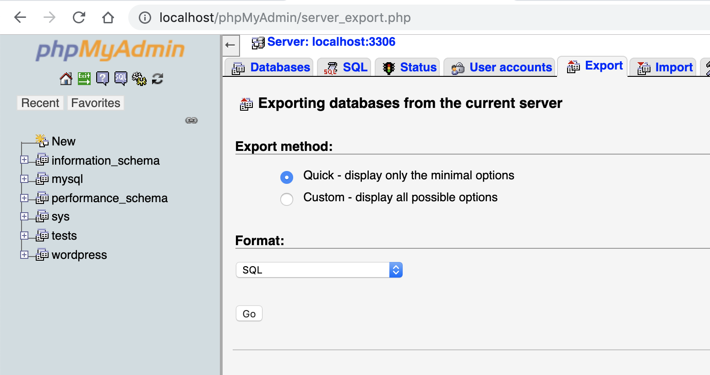

Mamp mac setup
Setting up wp-browser with MAMP on Mac to test a plugin
Requirements
- A Mac machine
- A working installation of MAMP.
- You should be able to create sites and visit them from your browser without issues.
- Composer installed and working on your terminal
PATH, you should be able to runcomposer --versionat the terminal and see the version correctly.
The version of MAMP used in this tutorial is the free, non PRO, one. MAMP PRO provides more features, but the setup instructions should remain valid.
Install and configure MAMP
This walk-through starts after MAMP has been installed and is correctly running on the host machine; you can download MAMP from the site and follow the installation instructions.
In the context of this guide I'm assuming the "Document Root" directory is the default one, in the /Applications/MAMP/htdocs directory.
If your document root lies elsewhere, replace the /Applications/MAMP/htdocs path with the actual directory in each command.


Creating the databases and installing WordPress
Go to the http://localhost/phpMyAdmin/ page and create two new databases:
wordpressis the database you will use for WordPresstestsis the database you will use for the tests

Unzip the the WordPress files into the /Applications/MAMP/htdocs and head over to http://localhost to install WordPress.
The database credentials for the installation are:
- Database name:
wordpress - Database user:
root - Database password:
root - Database host:
localhost
Use admin as administrator user name and password as password for the administrator user.


Make sure you can visit the WordPress installation at http://localhost and that you can correctly access the administration area at http://localhost/wp-admin.
Scaffolding the project folder
I'm assuming the scope of the development is to test the my-plugin plugin.
The first step is to create the bare minimum code required to make the plugin show up among the available WordPress plugins.
Create the main plugin file in the WordPress installation plugins directory, in the /Applications/MAMP/htdocs/wp-content/plugins/my-plugin/my-plugin.php file:
<?php
/**
* Plugin Name: My plugin
*/
The plugin should now show up, activate and deactivate correctly, among the plugins listed in the WordPress installation at http://localhost/wp-admin/plugins.php.

Installing wp-browser
Open a terminal window and navigate to the plugin directory and initialize the Composer project:
cd /Applications/MAMP/htdocs/wp-content/plugins/my-plugin
composer init

Composer will ask some questions to initialize the project, for the sake of this small guide the answers are not relevant.
Here is the composer.json file generated by the above answers:
{
"name": "mamp/my-plugin",
"type": "wordpress-plugin",
"require": {}
}
Next require lucatume/wp-browser as a development dependency:
composer require --dev lucatume/wp-browser
Composer installs any dependency binary file, an executable file, in the project vendor/bin folder.
To check Codeception is correctly installed run this command:
vendor/bin/codecept --version

Since wp-browser requires Codeception, there is no need to require Codeception explicitly as a development dependency.
Setting up wp-browser
For those that might get lost while trying to set up wp-browser for the first time the VVV context provides an excellent base to understand the process.
wp-browser needs to know:
- Where the WordPress installation files are located: they will be loaded in integration and "WordPress unit" tests.
- How to connect to the WordPress site "normal" database: this is the database that stores the data of the site I would see when visiting the local installation URL at
http://localhost. - How to connect to the database dedicated to the integration and "WordPress unit" tests: this database will be used to install WordPress during integration and "WordPress unit" tests.
Any test suite using a database should never run on a database containing data of any value; this means that your first step should be to backup the site database.
You can create a backup of the current site database contents using phpMyAdmin, at http://localhost/phpMyAdmin/, under the "Export" tab:

At any moment you can re-import the site database dump using, again, phpMyAdmin, under the "Import" tab:

Bootstrapping and configuring wp-browser
After the backup is done it's time to bootstrap wp-browser using its interactive mode:
cd /Applications/MAMP/htdocs/wp-content/plugins/my-plugin
vendor/bin/codecept init wpbrowser
The initialization guide will ask a number of questions.
In the screenshots below are the answers I used to configure wp-browser.


Below a complete list of each answer:
- I acknowledge wp-browser should run on development servers...
y - Would you like to set up the suites interactively now?
y - How would you like the acceptance suite to be called?
acceptance - How would you like the functional suite to be called?
functional - How would you like the WordPress unit and integration suite to be called?
wpunit - How would you like to call the env configuration file?
.env.testing - What is the path of the WordPress root directory?
/Applications/MAMP/htdocs - What is the path, relative to WordPress root URL, of the admin area of the test site?
/wp-admin - What is the name of the test database used by the test site?
tests - What is the host of the test database used by the test site?
localhost - What is the user of the test database used by the test site?
root - What is the password of the test database used by the test site?
root - What is the table prefix of the test database used by the test site?
wp_ - What is the name of the test database WPLoader should use?
tests - What is the host of the test database WPLoader should use?
localhost - What is the user of the test database WPLoader should use?
root - What is the password of the test database WPLoader should use?
root - What is the table prefix of the test database WPLoader should use?
wp_ - What is the URL the test site?
http://localhost - What is the email of the test site WordPress administrator?
admin@wp.test - What is the title of the test site?
My Plugin Test - What is the login of the administrator user of the test site?
admin - What is the password of the administrator user of the test site?
password - Are you testing a plugin, a theme or a combination of both (both)?
plugin - What is the folder/plugin.php name of the plugin?
my-plugin/my-plugin.php - Does your project needs additional plugins to be activated to work?
no
Codeception will build the suites for the first time and should be ready to go.
Setting up the starting database fixture
A "fixture", in testing terms, is a minimal, starting environment shared by all tests.
In BDD it's the Background any scenario will share.
In the case of a plugin the minimal, starting environment is the following:
- A fresh WordPress installation empty of any content.
- WordPress using its default theme.
- The only active plugin is the one you're testing, in this example:
my-plugin.
You should set up this fixture "manually", using the site administration UI at http://localhost/wp-admin.
The following command will empty the site, backup any content you care about first!
When you're done setting up the initial database fixture, export it using the "Export" tab of phpMyAdmin, at http://localhost/phpMyAdmin/ and move the file to the /Applications/MAMP/htdocs/wp-content/plugins/my-plugin/tests/_data/dump.sql directory.
There is one last step left to complete the setup.
Using the tests database in acceptance and functional tests
Acceptance and functional tests will act as users, navigating to the site pages and making requests as a user would.
This means that WordPress will load, and with it its wp-config.php file, to handle the requests made by the tests.
During the setup phase I've specified the database to be used for acceptance and functional tests as tests but, looking at the contents of the /Applications/MAMP/htdocs/wp-config.php file, the DB_NAME constant is set to wordpress.
What we'll do now means:
- If the request is a normal one, use the
wordpressdatabase. - If the request comes from a test, use the
testsdatabase.
In your IDE/text-editor of choice edit the /Applications/MAMP/htdocs/wp-config.php and replace the line defining the DB_NAME constant like this:
- define( 'DB_NAME', 'wordpress' );
+ if( isset( $_SERVER['HTTP_X_WPBROWSER_REQUEST'] ) && $_SERVER['HTTP_X_WPBROWSER_REQUEST'] ) {
+ define( 'DB_NAME', 'tests' );
+ } else {
+ define( 'DB_NAME', 'wordpress' );
+ }
Here's the copy-and-paste friendly version:
if( isset( $_SERVER['HTTP_X_TEST_REQUEST'] ) && $_SERVER['HTTP_X_TEST_REQUEST'] ) {
define( 'DB_NAME', 'tests' );
} else {
define( 'DB_NAME', 'wordpress' );
}
If you look at the tests/acceptance.suite.yml and tests/functional.suite.yml files, respectively the acceptance and functional suite configuration files, you will see these entries in the WPBrowser module configuration:
headers:
X_TEST_REQUEST: 1
X_WPBROWSER_REQUEST: 1
This means that, with each HTTP request done during tests, the module will send the two headers.
Those headers are read, on the WordPress side, using the $_SERVER['HTTP_X_TEST_REQUEST'] and $_SERVER['X_WPBROWSER_REQUEST'] variables.
Codeception and wp-browser are ready to run and the test-drive development can start.
Sanity check
Before starting to write tests, take a moment to run each suite separately and make sure all is set up correctly.
If you run into issues, there's a chance you forgot something along the way, please take the time to read this tutorial a second time before opening an issue.
You have created 4 suites, each suite has at least one example test to make sure all works.
Run each suite and make sure all tests succeed, from within the box run:
cd /Applications/MAMP/htdocs/wp-content/plugins/my-plugin
vendor/bin/codecept run acceptance
vendor/bin/codecept run functional
vendor/bin/codecept run wpunit
vendor/bin/codecept run unit
You're now run to customize the suites to your liking or start writing tests, run vendor/bin/codecept to see a list of the available commands.